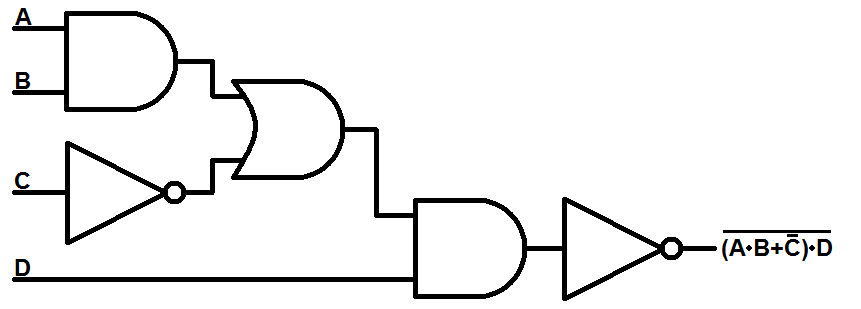
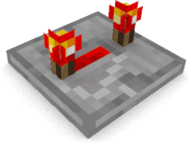

WELCOME TO CMSC 389E: DIGITAL LOGIC!!
Hello, and welcome to CMSC 389E: Digital Logic through Minecraft! Throughout this semester, we will be using Minecraft's Redstone as a teaching aid to teach various fundamentals of Digital Logic.

October 9th: Practice Midterm available at the below link.
You can use the pdf document at the link in this announcement in order to study for the midterm. You can expect a similar layout and content.
Follow this link.

September 7th: Reminder to purchase Minecraft and send us your usernames.
You will need to have a Minecraft account. If you have not yet purchased it, please do so before the first project is due. Additionally, you will need to send us your Minecraft ID in order to be able to participate on class servers.
Please send your Minecraft username to us via our contact us page.

August 31st: Heads up for the first day of class
You will need to have a Minecraft account. Additionally, you should bring an internet-enabled device with you for ELMs quizzes (these are extra credit).
Please send your Minecraft username to us via our contact us page.
